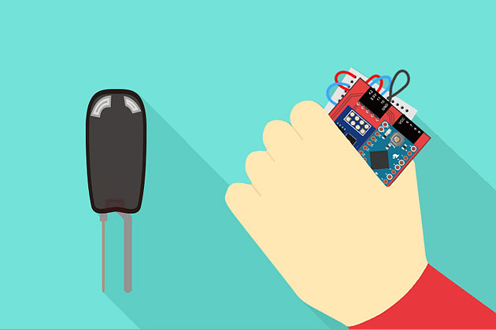

介紹與設定
基本介紹
April 20, 2015
初始化設定
April 20, 2015
常見問題處理
April 20, 2015
範例教學
單顆 LED 燈
April 20, 2015
兩顆 LED 燈交互閃爍
April 20, 2015
三色 LED 燈
April 21, 2015
三色 LED 燈調色盤
April 22, 2015
超音波傳感器
April 22, 2015
超音波傳感器改變圖片大小
April 25, 2015
超音波傳感器 + LED 燈
April 25, 2015
超音波傳感器 + 三色 LED 燈
April 25, 2015
不同裝置彼此連動 ( 按鈕 + LED )
April 25, 2015
溫濕度傳感器
June 1, 2015

震動開關改變網頁數值
June 2, 2015
聲音偵測點亮 LED 與網頁燈泡
June 3, 2015
蜂鳴器播放自製音樂
June 4, 2015
繼電器控制風扇旋轉
June 4, 2015
人體紅外線偵測控制 LED
June 4, 2015